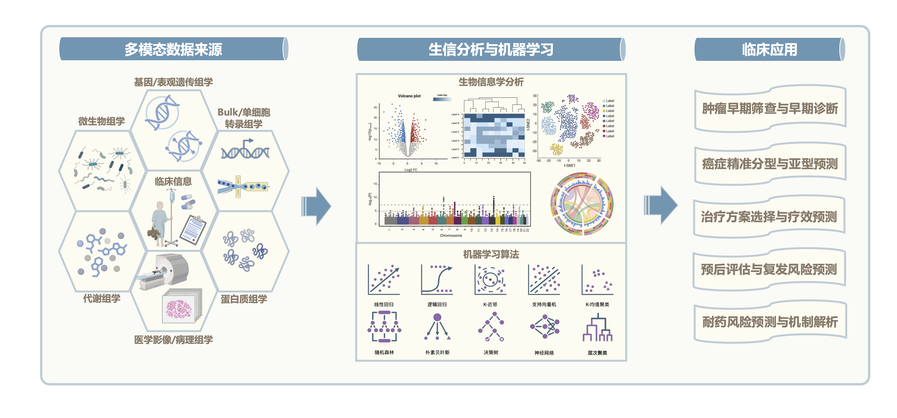

核心分析功能

项目组特色论文

NET-TMCO6 轴是克服肝癌免疫抑制的潜在靶点
Cancer research, 2024

DDAH1 系 EGFR+ 癌症预后标志物和潜在治疗靶点
Advanced science, 2025

多模态深度学习预测放化疗反应
Insights into imaging, 2024

肠道菌群介导环境污染物神经毒性
Journal of hazardous materials, 2024